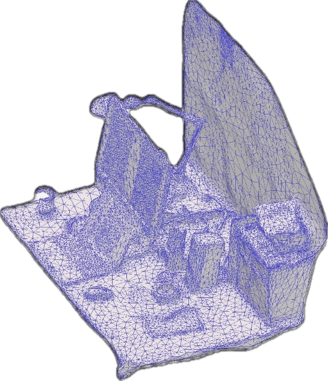

I am a researcher interested in normativity. I am trying to figure out how digital technology and other meaning-making practices like music and art can shape our conceptions of what we should do, believe, and value.
As a philosopher, I draw connections between theoretical research in normative ethics, social philosophy, philosophy of technology, and recent computer science work to examine the mechanisms by which AI influences moral and epistemic norms in society. Currently, I study performative prediction in generative AI: how these systems change our ideas about what we should be by making predictions about what we currently are. I focus on issues like causal influence of LLMs on human language use, representation of prescriptive norms in AI models, and value change over time in AI-augmented societies, aiming to show how those might impact our freedom, responsibility, and capability to know. My PhD project is part of a joint research lab between Maastricht University and TU Delft focusing on AI for scientific discovery.
As a curator, I am interested in how highly conceptual kinds of avant-garde music can be concretized into authentic experiences beyond theoretical comprehension or individual relatability. I have been working as a curator for Ukno Ensemble, Ukho Music agency, and Plivka Art Center (all in Kyiv, Ukraine), where I organized large-scale performances and interdisciplinary exhibitions, often at unconventional locations, to renew the experience of contemporary classical, experimental electronic, and imporvisational works for specialists and non-specialists alike. Sometimes, I consult for the Kyiv Dispatch record label, launched by Ukho Music.
Born (1995) in Kyiv, Ukraine; based in Maastricht, Netherlands.
Contact:
bogachov@protonmail.com